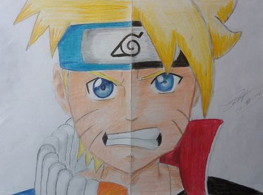

Naruto / Boruto

Naruto Uzumaki
Um jovem ninja que carrega em seu interior o demônio Kyūbi,
e deseja ser o Hokage de sua aldeia, já que ninguém queria estar perto dele por causa
da Kyūbi e para demonstrar seu verdadeiro poder, como igualmente sua valentia
Boruto Uzumaki
É um personagem fictício criado pelo mangaká japonês Masashi Kishimoto.
Aparece pela primeira vez no final da série de mangá Naruto como
o filho do protagonista Naruto Uzumaki e Hinata Hyuga.
Mais tarde desempenha um papel significativo no filme de 2015 Boruto: Naruto the Movie
onde está treinando como um ninja para superar seu pai, o Sétimo Hokage.